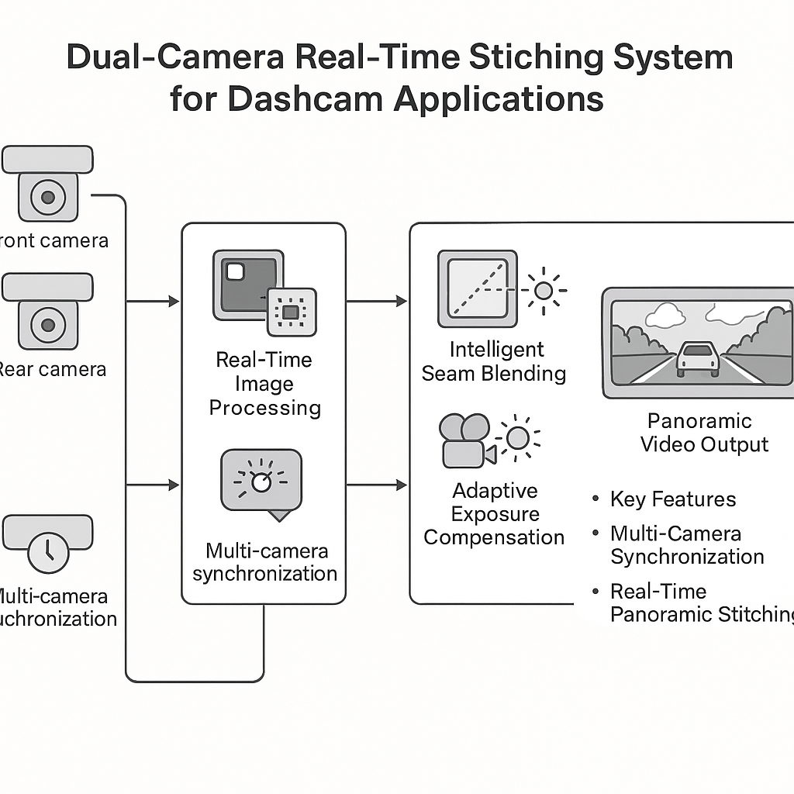

图1：双摄实时拼接系统架构 - 多摄像头同步、实时拼接、智能融合
行车记录仪全景视野增强系统
行车记录仪作为汽车安全的重要设备，其视野覆盖范围直接影响驾驶安全性。传统的单摄像头系统存在视野盲区，无法为驾驶员提供完整的周围环境信息。本项目旨在通过双摄像头实时拼接技术，为行车记录仪提供360度全景视野，显著提升驾驶安全性和监控覆盖范围。
系统采用前后双摄像头配置，通过先进的计算机视觉技术和实时图像处理算法，将两个视频流自动合成为无缝的全景视图。该技术不仅适用于行车记录仪，还可扩展到汽车安全、监控系统和高级驾驶辅助系统（ADAS）等多个应用领域。
项目在VS开发平台上使用C++和OpenCV实现，成功将算法移植到移动设备端，实现了与硬件的高效对接，提升了产品的性能和市场竞争力。
通过双摄像头同步采集和多线程并行处理，实现毫秒级延迟的全景视频合成，为驾驶员提供实时的360度环境感知。
系统采用多阶段图像处理流水线：特征提取与匹配、几何变换计算、图像对齐与融合、无缝拼接优化。每个阶段都经过精心优化，确保在资源受限的移动设备上实现实时性能。

如图1所示，系统采用模块化设计，包含图像采集、预处理、特征匹配、几何变换、图像融合和输出显示等核心模块，各模块协同工作实现实时全景拼接。
本系统采用分层架构设计，包含硬件接口层、算法处理层、优化控制层和用户交互层，各层之间通过标准接口进行通信，确保系统的模块化和可扩展性。
双摄像头同步采集、图像预处理、格式转换
SURF/SIFT特征提取、特征匹配、几何变换
图像对齐、无缝融合、输出优化
多线程处理、内存管理、实时调度
为驾驶员提供360度全景视野，消除盲区，提升驾驶安全性。
全方位监控车辆周围环境，适用于车队管理和安全监控。
为自动驾驶和辅助驾驶提供完整的环境感知信息。
扩展应用到其他需要全景视野的监控场景。
系统在移动设备上实现毫秒级延迟的全景拼接，支持多种分辨率和帧率，满足实时应用需求。
| 性能指标 | 技术规格 | 优化效果 |
|---|---|---|
| 处理延迟 | < 50ms | 满足实时应用需求 |
| 拼接精度 | 像素级对齐 | 无缝融合效果 |
| 支持分辨率 | 720p - 4K | 适应多种应用场景 |
| 特征匹配 | SURF/SIFT | 高精度特征定位 |
| 几何变换 | RANSAC + LM | 鲁棒性变换估计 |
| 图像融合 | Pyramid融合 | 消除拼接痕迹 |
项目成功实现了双摄像头实时拼接算法，通过算法优化涉及SURF/SIFT特征提取、KNN搜索、RANSAC模型估计和LM优化，显著提升了拼接效果和算法速度。创新性地应用最大生成树、投影变换、最大流图割法和Pyramid融合技术，解决了图像拼接中的复杂问题。
成功将算法移植到移动端，实现了与硬件的高效对接，提升了产品的性能和市场竞争力。通过工厂校准方案的实施，确保产品在出厂前达到最佳性能，为后续的产品化奠定了坚实基础。
该项目的成功实施，不仅解决了行车记录仪视野盲区的问题，还为汽车安全、监控系统和ADAS等领域提供了技术支撑，进一步巩固了在计算机视觉和嵌入式算法开发方面的技术能力。